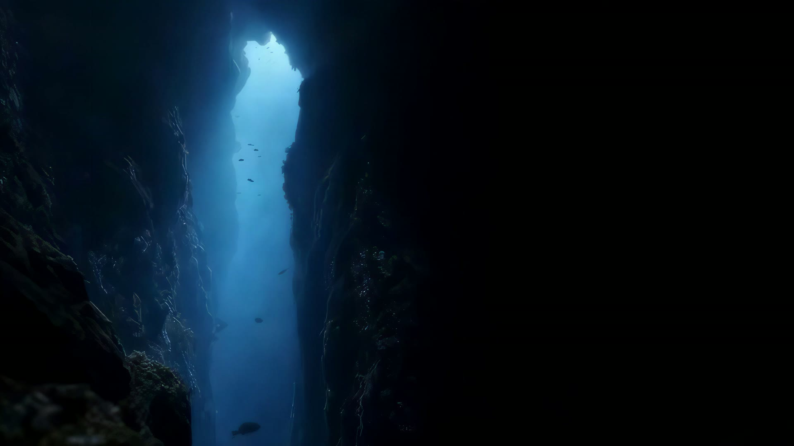

GD2 · Visitor intelligence
Know who’s shopping. Act while it matters.
You also see which pages they looked at, and when.
The deeper you go, the more you know.
From a single page view we identify 300+ data points on your visitors — name, phone, email, address, income, home value, credit, existing loans, social links.
Scroll